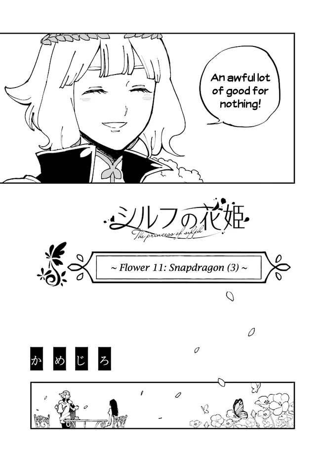

Btw, there are lots of things that i missed out, so if you ever see things out of place, notice me.
This is just where I place mangas I read at, it's a lot of things, like sex, and fighting... Note that nsfw.
I'll add to this later, just click the + if you wanna read my description, not all mangas have it, though.
Looks like mangadex has been changed a bit, so many of those links might not perform well, i won't be dealing with
that, though, i'm lazy
Golden Man [+]
This manga made me realize i am not gay nor furry or anything (i thought so when i met lycaon
in zzz storyline, and his side stories, too)
I just like nice people, or dogs, lycaon is a dog - furry - thiren - lycanthrope? whatever, he is like, dog, so
i like him very much!!
The character in this manga is also thought of like, a dog (i never realized that, mostly because it's just
his personality, and not appearance)
There is another guy who is like a dog, too, hakuya, however, since he is already engaged to kobeni, it is not my
best interest to think so
Did watch a season, season 1, but honestly, since the manga is finished i'll just go ahead with it instead.
[Oshi no Ko] [+]
Reading this manga up to the point where i can see aqua brute force his mom's phone password, i
browsed it and saw extra stories translated by fans, basically, the password that ai used had relations to
b-komachi's members, which exposes more of ai hoshino's personality, her situation and her past.
If i were to give a little summary, I'd say that she got abused by mom: glass shards in rice bowl, and that has
a connection to when she answered fans: what food do you dislike, something like that, and she replied rice. The
b-komachi's member knew she ate rice and bento stuff, so why hate it? It was the connection to her being abused by mom.
Ai lied, she couldn't show her weakness, but that question and moment was the only time she was shown like that.
Poor Ai. Reading this myself, I know I did a terrible job just parroting what people said, but if you got interested,
follow this reddit thread
To be fair, her phone password 45510 was a small detail that even people who read the whole manga went to reddit
in order to figure out why, and from it i found 2 stories. To think that of all the mangas I have read, there must
have been so many missed details sucks. I can deal with it if it's lost during translation, but things like this,
it's a mere number, how could i notice every single one?
After binging it and finishing the whole thing (7/5/2025 ngl i don't wanna bother with spinoffs or anything i
still gotta finish other series), it was definitely good to read. There was the plot, which got me hooked up, acting,
though they do cut a lot, but it's okay, they'd shown the good parts, acting, idols, love life, detective and, in the
near end, pulls out 69 plot twists.
The annoying thing is that, even though there was annoying stuff going on, it is impossible to entirely pin the
blame on people, the story tries to give them a backstory that explains why they would act unreasonably. It does
trick me into thinking the bad guys is not that bad after all, they are still evil, it's just that was backed up
by their pasts.
Honestly, seeing people talk shit about its ending piss me off, it was a rational course of action, or at least
I believe so. But still, even if it was that bad what gives you the power to shit on it so terribly, yet you
enjoy such obnoxiously braindead pieces like solo leveling (I can't confirm that those guys actually like it, though).
I would, however, correlate that since humans are a bunch of idiots following others and have 0 valid opinions, their
criticism have 0 value (as do mine). Fans in the manga was portrayed to be bad in nature, so they are just backing up
the author, lol. (mobs should be gone, stupid pieces of shits that don't know they are merely created by entropy)
Btw, kaguya (in kaguya-sama) did appear as a photographer, you know what it means, the next series would be kaguya
sama
girlfriend limited to 7 days [+]
By the time i began reading this, they have already reached the 7th day, so that's quite the
wait and tension built up to see what it'll turn out to be like. Honestly, I'll probably forget what happened since they
mostly did some average lovers' things, and then lesbian sex.
Let's just say, the black hair doesn't cook well, is scared of some cicadas/ thunder, which is cliché (especially
cicadas since midou kenshirou (from another manga down there) also freaks out when he sees them)
The release of each chapter takes like 1 month, from september to april (for some reason, february isn't
included?). It mostly means that i'll have to wait for a month for another chapter (so long).
This is no new manga, it's been sitting around this archive for a while and i even watched the full
anime, however, this time i just realized an important thing (because apparently mangadex's translation missed chapter
32's 2 pages, so i wanted to find those by resorting to raws)
When i eventually saw them, they said that mangadex's translation has been wrong, which came as a huge shock (how?!),
so now i'll read the ones on torrent (the raw site)
What annoys me is that, they stopped at volume 10, in 2019, yet the manga has 15, so for the last 5 volumes, i'll
have to deal with mangadex (seemingly faulty)
I am bothered by the fact that torrent stopped at volume 3, which means that i can't download volume 1 to 9 for
some odd reason
But I really want to read the best version!
It appears that I have finished downloading from volume 1 to 10, yet the pages 32 and 33 of volume 3 are still
missing (what a let down)
Summary: I went to mangadex, read the manga, realize there are 2 missing pages, went to nyaa.si to find raws that
might have the missing pages, see the translation that says mangadex is faulty, download those translations, they still
have missing pages. Had to learn how to turn .cbz into .pdf, learnt that sumatra (i already have it) can open cbz
anyways. Read the converted cbz files (they were in the raws), realize that they aren't too different from mangadex
after all, returned to mangadex.
So i just did a bunch of things around this manga, turns out they were all 
So this is a manga mentioned from cromartie high school, well, i can't find its full version yet
I read the review, there was 1, they said it was comedic (but i haven't read it yet, so is it funny or not?!)
me when the 69th yuri manga: (because i kinda read like 100 of the oneshots from dynasty reader of
touhou)
this time, it is on an island, with 2 girls, and, a lot of twists (really now, that's a pun, since the story got
the twisters, like, winds thingy)
i don't wanna spoil, but since idc, i'll say that i wanna know what the heck is the monster and what it does with
abalones
oh, and it seems like it got licensed, my take is that i'll have to read it somewhere else, but no matter, i'll read
the author's 2 other works as well first
maga-tsuki [+]
I was a bit flabbergasted by how it doesn't even get much english translation yet there is the
full vietnamese version, say, you'd expect the more popular language to be around
the reddit user who from subreddit of kyou no cerberus recommended this, so let's dig in, after i finish the ones
below (there is just so many to read)
Kyou no Cerberus [+]
This, and the one above it are the ones recommended by various threads, like, i go see
translation note from mikakunin de shinkoukei and they recommended this
although, adding more feels quite tiring, since i haven't even finished most of the ongoing series
btw, mangadex doesn't have the entire translation, but bato.to does anyways, so i'll resort to it then
ラウルと吸血鬼 [+]
I don't care anymore, I read so many femboys (like 10?) that gender probably doesn't matter
that much, at least in a manga, not in real life, it doesn't quite work out there
it's cool to see a lolibaba i guess, though i don't much favor the idea of being pampered, like how i usually
avoid shota
why is the vampire so hot though
There is definitely a bit of something for everyone, a large collection of oneshots, whether
it is about story or artstyle, maybe just for the sake of reading?
i like the cute girls and the funny things happening there sometimes
28/4/2025: i take that back, the series is full of traps and whatnot, well, it's not too bad, but it's a bit too
gay
1/5/2007: (wow happy birthday to me) after finishing 400 chapters i have to say, the content conclude in romance
and comedy, majority is short light hearted stories (with the exception of a horror one, for whatever reason), the onces that caught my attention:
The Blossoming You
i am deeply upset how there isn't any manga from this author, it was such a lovely lady, would have been interested
to see more of those old loli flower women
Jurassic academy
Not much i care about the story or anything but the dinosaurs' details would be quite insane, also, who tf wants to
see those trex in school or sth lol (totally not me)
Another comedy that was quite favorited by mfs back then who recommended it on a parody doujinshi
i read on dynasty reader (i think it was about China's name and shit)
Watch the anime instead if you don't mind missing out manga exclusive content, i heard that anime cut out the boring
crap inside manga
Asobi Asobase [+]
It's probably good comedy, though i only ever watched the anime's supercuts so no idea really
YuruYuri [+]
Another gay one (or lesbian if you'd like), i haven't even read it just watched Yuru Yuri S2 Chinatsu hair compilation
Koisuru (Otome) no Tsukurikata [+]
I obviously know that it's gay, but dude author just draws a cute girl and calls that a boy i
mean how can you not be interested in that
This is still gay though, not sure what to do with it
Toradora! [+]
I haven't yet started on it, but i like tsunderes, maybe i'll come back later (this is what the site was made for anyways)
Heterogenia Linguistico: An Introduction to Interspecies Linguistics [+]
I've also yet to really start on this one, only 2 chapters in, however it seems to be a nice slice of life, kaisermutt (the translator on mangadex) seems to really enjoy this one, so expect a lot of linguistic references
School students with math and IMO and such, i don't get most of it, though. The first problem had to do with pigeonhole and ramsey's theorem which was understandable, but when it got to Diophantine equations with modular operations i gave up.
Back to back mesugakis, however this time they are just putting on a show as business (I can
argue that the ones in zako zako sensei was also acting but at least their "love" is real so that would be different)
It isn't as special or fleshed out as the previous one, so there might be a chance that this one gets cancelled T_T
Plastic Memories [+]
Haven't watched, but the style is good and people seems to like the sad premise, might give it a try when i got time on my hands
Isekai Ojisan [+]
An isekai I read quite a while ago so might need time to catch up with the latest chapters,
most of it was this uncle guy who gets a coma (the unusual route since it is usually death that causes isekai but
whatever) and travels to another world then wakes up after a while (still retains his items)
It was mostly cute girls and fanservice and uncle being dense af (still props to his ass for his loyalty with SEGA
lol after that long of a time)
Suzumiya Haruhi [+]
Haven't watched yet, however it seems to be enjoyable for people back then, and then there's
endless 8 (as i will mention in Gal☆Cleaning!)
The haruhi problem is
what popped up later and that's pretty cool
Aori-kei Game Haishinsha (20-sai), Haishin no Kiri Wasure ni Yori Ii Hito Bare suru. [+]
Absurdly long name, it's a new and amateurish manga, not much to see for now i guess (nor potential there is)
Berserk [+]
One of the most annoying thing to happen is the fact that this shit's not ending in full
potential because its author died
I can see why people like it, the detailed and intricate art, metaphors and whatever people interpret from it
Personally, though, it's got quite a story (feels like a breeze), the most challenging part was the archaic english
that i spent more time reading the definition than the actual manga itself
It could be said to be opposite to "oyasumi punpun" by some people, I don't know why
Try it if you like, it's quite long and has adult content so keep that in mind
Chained Soldier [+]
It's an ecchi (sexy scenes and shit) but I like when the characters get fleshed out and
behave differently than normally prescribed archetypes, which i think is lively and nice
The art is good too, I hope it gets more attention though
Freak Island [+]
Monsters and people, gore, body horror, family things and some more stuff, it is actually quite finished, just that translations haven't caught up so I couldn't finish it already
Futaribocchi no Otaku Circle no Hime [+]
Like the previous one, finished manga that haven't gotten translation, also i only read this because it came from miss kobayashi's author
Koi shinobu
Medaka BoxA soft romance and comedy (mostly carried out by the silly sister sara lol), it's nice
to read and figure out flowers, their meanings, even though these flowers don't really make an appearance (or not as noticeable)
the manga is still ongoing, but you need to pay, so i'll have to wait till i got the money to support
those guys :(
From the author of Kami nomi zo Shiru Sekai (The World God Only Knows)
It seems nice, i like the grad student, mf becomes adorable af, the story haven't made much progress
so it's pretty much wait and see
Zaako Zako Zako Zako Sensei [+]
Target audience: Me
Anyways the manga is about mesugakis trying to rizz sensei up (really) while being really bratty and provoking cunny
nerves sensory (which is highly present in me)
We get to see their backgrounds and things going on (albeit seemingly dilettantish), let's hope it grows
big one day!^^
4/5/2025: Actually, the manga ended quite a while ago, i just forgot to move it down here, the ending is alright.
Usually, you'd expect someone to be chosen, but sensei didn't pick anyone, they'd stay together i guess (personally,
it's the best ending, because all mesugakis need to be loved equally (though at some point they just became normal
tsunderes))
Solanin [+]
It's a smooth and realistic depiction of daily life, or at least trying to be, as do with
asano inio's works (he drew Oyasumi Punpun
, btw)
There isn't a whole lot i can say, the story was short but simple, revolving around friends, band
and whatever tiny things that happens in these characters' lives (mostly fooling around)
Usually there is some deep meaning rooted in those mangas, but i can't seem to wrap my head around
it (as always), should i declare that meaning is subjective?
A melancholy is what i'd describe, a soft and happy one
Saihate ni madou [+]
Another work i stumbled while searching for more of saihate station online as the names
are similar, however they have 0 connection so screw that
The premise here is quite simple, guy do this guy do that, but there's plenty to uncover and in the end,
it's alright
Notably mentioned as pretty, i suppose so my guy
Saihate station [+]
Honestly, I don't know what to say, the dynamic here is like how 2 main characters are
kinda polar opposites
Anyways, it was alright, art's good and cute, music is normal, story seems quite short but I suppose the
world building is there
Btw, it is gay, like the 3rd time i'd put gay stuff here bruv
A rather short adaptation of the whole story "the count of monte cristo", there is an anime
(which i am not going to watch)
Honestly, it's difficult to understand what it's all about, things get abstract in the end, i'll go read the novel
instead or sth
Otaloli Dragon! Baha Muko-sensei [+]
A dragon girl (more like brat) who draws manga and goes on a tangent with the cast (4 people
or sth). It probably got cancelled (I guess it wasn't good enough)
The translator notes at the end gets quite detailed and humourous (as expected of house deer scans).
Gal☆Cleaning! [+]
An absolute warcrime of a romcom (which led to its end i presume), there was some potential
in a story about a guy aggressively cleaning a "defenseless" gal's absurdly messy house, however some unnecessary
appendix really ended that.
On a side note, though, the endless chapter 8 is a pretty funny concept (perchance it is connected to
haruhi's endless 8? lol)
Fire punch [+]
Now that i'd read this twice (to be fair, it's short af, it's the same length as
shokuryou jinrui), i can say with confidence i don't understand what the hell were they fucking around in there,
sure, it's somewhat nihilism, trans men, meaning in life, but then, it really is meaningless, isn't it? Because
the characters end up dead anyways.
But again, perhaps that same meaning is what we need to figure out for ourselves, either way, it was real
boring to read, the world was dying anyways, there is no way out of the apocalypse, it was, from the very start,
the end
To be fair, it's not supposed to be a normal manga, is it?